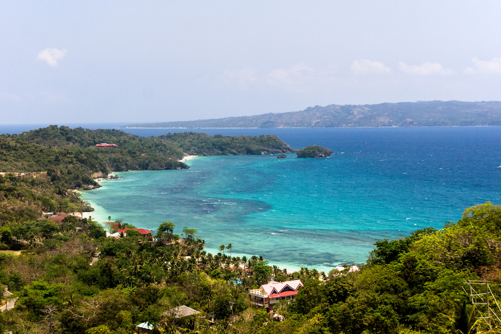
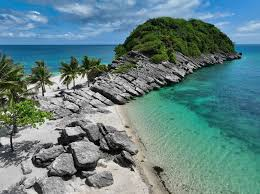

PatHAway
PatHAway
⋆˚꩜ ݁About Region VI
Western Visayas is an administrative region in the Philippines comprising six beautiful provinces: Aklan, Antique, Capiz, Guimaras, Iloilo, and Negros Occidental. Famous for its world-renowned white beaches like Boracay, island-hopping adventures, heritage churches, and warm hospitality, Region VI is the ultimate tropical getaway.
Featured Provinces & Destinations!

Aklan
Boracay White Beach

Iloilo
Islas de Gigantes

Negros Occidental
The Ruins, Talisay

Guimaras
Alubihod Beach

Antique
Tibiao Kawa Hot Baths